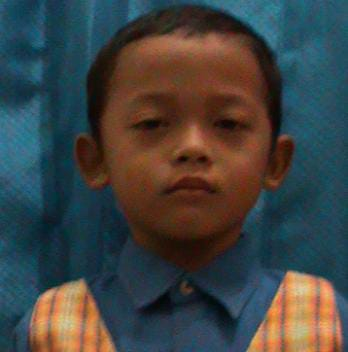
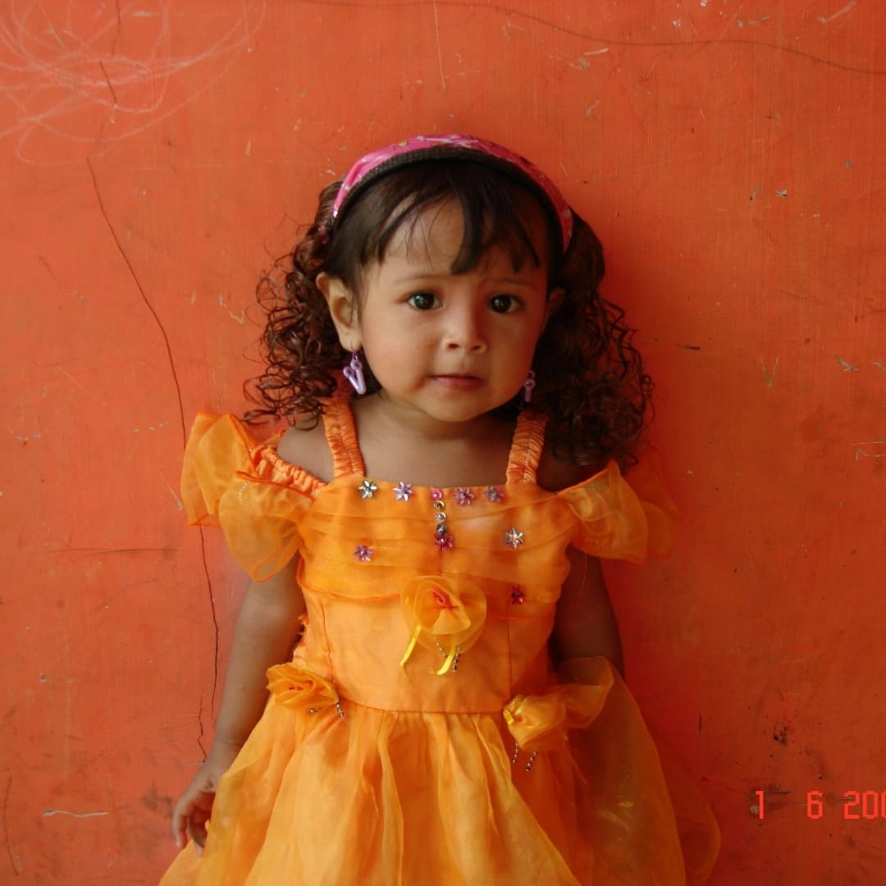
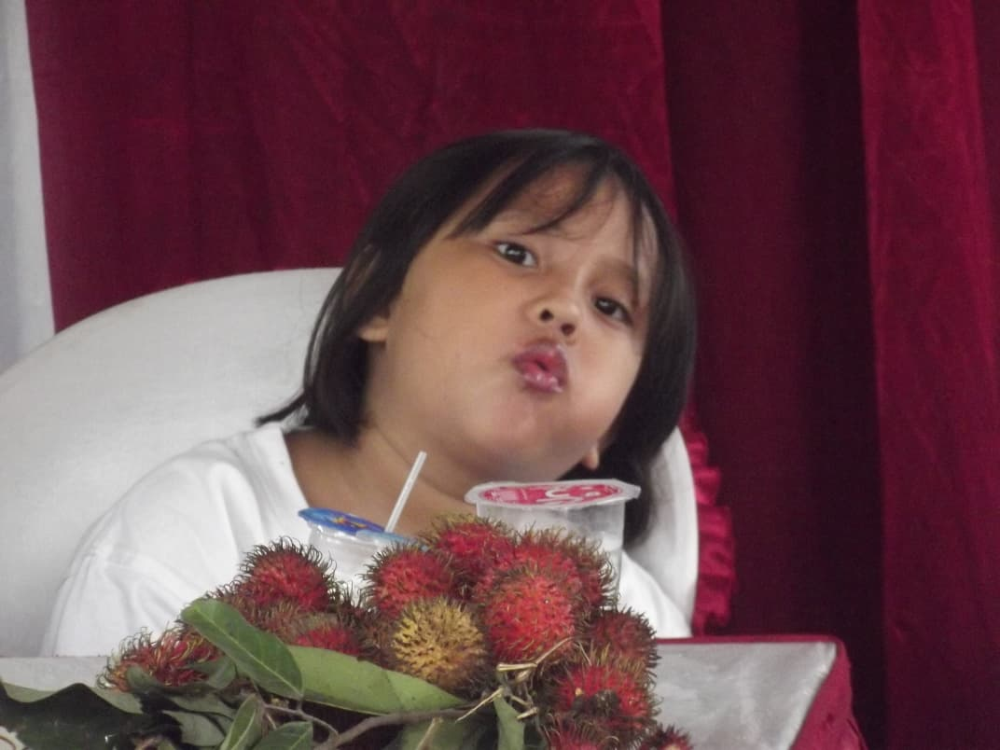
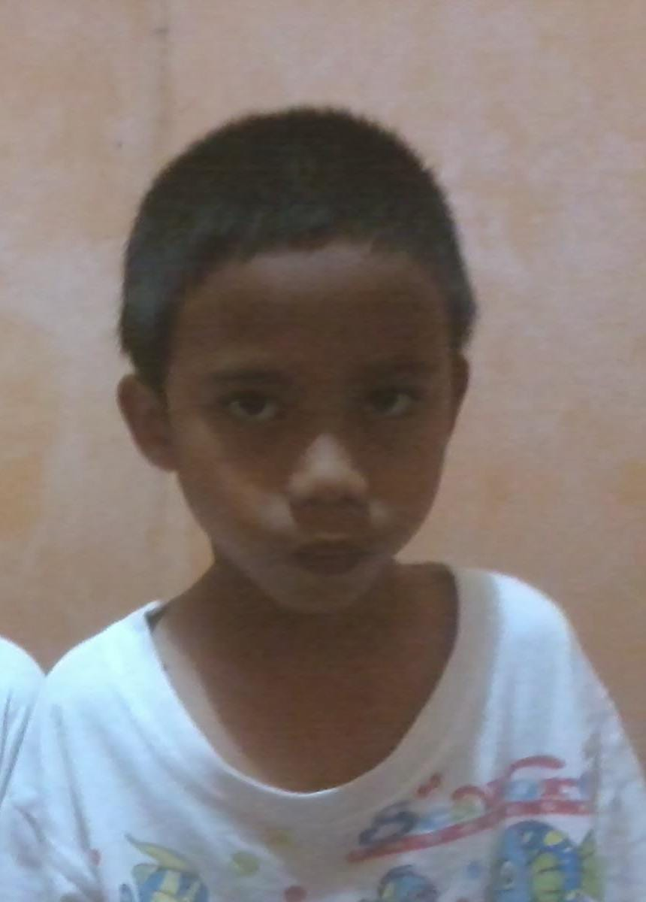

follow our media social :
FS LangitKikatoti
FS AirDalamiti
FS Secviro
FS Vrigoen
FS Werfing
FantasySchool
Home
About
Lokasi
Eskul
Paskibra
Basket
Badminton
Tenis
Golf
Club Seni
PMR
Pramuka
Band Musik
Semua info Eskul
Contact
Prestasi
Developer Team
Membangun pengalaman belajar modern dengan sentuhan teknologi yang lembut.

M. Abdurrohman Aziz Al Mubarok
NIM: 0110125043

Syaqila
Nurussyifa
NIM: 0110125054

Kayla
Azzahra
NIM: 0110125098
Akmal Hilmi Zaidaan
NIM: 0110125134

Muhammad Fathin Al Fatih
NIM: 0110125098
Tutup